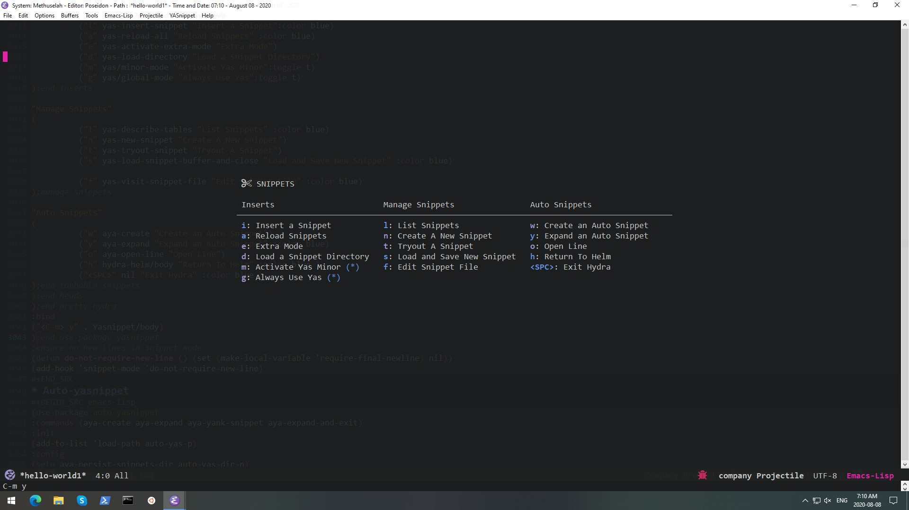

This post covers the following sections from my init.
Autocompletion ** Emmet ** Yasnippet
Preamble
Emacs is old school. You're either new to it - which means you wouldn't be here unless it was your type of thing - or you know what you're looking for. In either case, search 'Emacs' in tags or search on this site. Then read the posts y date from oldest to newest.
In the last emacs post I covered lines 2773 - 2942. This post covers lines 2995 - 3057. I include the lines for anyone that wants to patch together the entire init from start to finish. The lines won't always match up because I take stuff out when I'm in the init.
Autocompletion and snippet insertion are major components of any modern text editor and/or word processing set-up. Emmet mode expands characters typed into expressions while Yasnippet Mode inserts pre-selected sections of code.
The ':after' in the use package declaration gets emacs to run this code only after specified modes are called. The commands does the same only with commands called. The hooks autostart emmet on modes. I unbinded some key configurations that conflicted with my own.
I use Emmet a lot for html tags. To run it, put cursor after some keys typed and press C-j.
Yasnippet
Snippets are pieces of code you've collected for easy insertion. I use Yasnippet a lot and I'm happy with it. The main things you want to set up are the places you put your snippets, how you back them up, what your naming convention is (so you can remember them when you need to find them), and how to bring them up.
My system enables me to do the various operations from a hydra panel (see image below). To create the snippets I usually don't bother with the hydra but just jump to the directory I've bookmarked (using bookmark package) and use dir to create a new snippet file. Then I cut and paste some code from a past snippet and configure it. This way anything I do once I can do again super easily.
(use-packageyasnippet:diminishyas-minor-mode:commands (yas-reload-allyas/minor-modeyas/global-modeyas/insert-snippetyas-insert-snippetyas-activate-extra-modehydra-helm/bodyyas-new-snippetyas-load-directoryyas-visit-snippet-fileyas-tryout-snippetyas-describe-tablesYasnippet/body)
:init
(add-to-list'load-pathyas-p)
(require'yasnippet)
(yas-global-mode1)
:afterhydra:config
(add-to-list'auto-mode-alist'("yasnippet/snippets".snippet-mode))
(add-to-list'auto-mode-alist'("\\.yasnippet\\'".snippet-mode))
(setqyas-verbosity1)
(setqyas-use-menu'full)
;; Wrap around region
(setqyas-wrap-around-regiont)
(setqyas-indent-line (quotenone))
;packages
(use-packageyasnippet-snippets:defert
);end use-package snippets;load those snippets
(yas-reload-all)
;integration yasnippet and company
(setqyas-snippet-dirs'(
yas-snippets-p; main snippet director (when yasnippets snippets updated paste here with overwrite)auto-yas-dir-p;autoyas snippet directories;"/path/to/some/collection/";"/path/to/yasnippet/yasmate/snippets" ;; the yasmate collection
));yasnippets directories
(global-set-key (kbd"C-c C-s") 'yas/insert-snippet)
;hydra-title
(defvaryasnippet-title (with-faicon"scissors""SNIPPETS"))
:pretty-hydra
(Yasnippet (:colorred:quit-key"q":titleyasnippet-title)
(
"Inserts"
(
("i"yas-insert-snippet"Insert a Snippet":colorblue)
("a"yas-reload-all"Reload Snippets":colorblue)
("e"yas-activate-extra-mode"Extra Mode")
("d"yas-load-directory"Load a Snippet Directory")
("m"yas/minor-mode"Activate Yas Minor":togglet)
("g"yas/global-mode"Always Use Yas":togglet)
);end inserts"Manage Snippets"
(
("l"yas-describe-tables"List Snippets":colorblue)
("n"yas-new-snippet"Create A New Snippet")
("t"yas-tryout-snippet"Tryout A Snippet")
("s"yas-load-snippet-buffer-and-close"Load and Save New Snippet":colorblue)
("f"yas-visit-snippet-file"Edit Snippet File":colorblue)
);manage snippets"Auto Snippets"
(
("w"aya-create"Create an Auto Snippet")
("y"aya-expand"Expand an Auto Snippet":colorblue)
("o"aya-open-line"Open Line")
("h"hydra-helm/body"Return To Helm":colorblue )
("<SPC>"nil"Exit Hydra":colorblue )
);end tabbable snippets
);end heads
);end pretty hydra:bind
("<C-m> y".Yasnippet/body)
);end use-package yasnippet;ensure no new lines in snippet mode
(defundo-not-require-new-line () (set (make-local-variable'require-final-newline) nil))
(add-hook'snippet-mode'do-not-require-new-line)
Notes:
You can google the various pieces of code above or try them out. The main gist is that you need to load the libraries then set some directories for your code. I hardwired my directories earlier in my init so they are stored in variables 'auto-yas-dir-p,' and 'yas-snippets-p.'
It's also nice to get some premade snippets, which you get above with package yasnippet-snippets (I put some spaces in the code so easy to find). Then you get the hydra, which has most of the functions you use with yasnippet hardwired.

Image: Yasnippet Hydra
Autoyas
I don't use autoyasnippet a lot. It's a macro system for one-off jobs. For example, if you need to repeat a construction multiple times and you want to paste it then tab through it and enter information, then paste it again, and so on, you would use autoyas.
Here's the code:
1
2
3
4
5
6
7
8
9
10
11
(use-packageauto-yasnippet:commands (aya-createaya-expandaya-yank-snippetaya-expand-and-exit)
:init
(add-to-list'load-pathauto-yas-p)
:config
(setqaya-persist-snippets-dirauto-yas-dir-p)
;; No need to be so verbose
);end auto-yasnippet
Btw, A Lot Of People Are Viewing This Site. So You Can Comment Below!
Guess who's getting more and more views? Yup, Cloud Nine @ GitHub.io We get more and more unique viewers everyday, and that's without extensive SEO (in the works).
Most of our views come by way of long-tail keywords, like 'emacs hydra configuration', or our most popular post 'emacs company-mode.'
I've now enabled guest commenting through anyway Disqus. And that means you can speak to upwards of one hundred enthusiastic emacs viewers every week.
Just click your cursor in the comments input and select ‘comment as guest’
This kind man didn't invent the term scientist so you could make a mockery of earthly geometrics! He did it because science is badass, just like him. Taking science seriously is the first step to better health and a better world for all. You can take that first step here.
"We need very much a name to describe a cultivator of science in general. I should incline to call him a Scientist." ~ William Whewell.
Seriously though, most of our sciency posts are really about computer science, namely Emacs - but don't be swayed by the Old-Skoolers. If you're choosing a text editor for the first time, Emacs is dead.
Didn't you get the memo? And who are you anyway? Frankenstein? Give it up. Get over it. Go with Webstorm, or Sublime - open up your wallet and pay the man already. Or if you absolutely need to get cranked on Javascript, hit up Atom...it's free, and going places.
Having said all that, we use Emacs, and around here, the Earth is round.